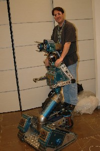

 |
Estudiante de Ingeniería Técnica de Informática de Sistemas
Correo electrónico: ricardo (at) eagleman (dot) org Nick: EagleMan Actualmente trabajo para la empresa Ifara Tecnologías, a la vez que termino mis estudios en la Universidad Pontificia de Salamanca campus de Madrid. |
Control de servos del tipo Futaba 3003 o compatibles desde el PC.
Cliente stargate para el control y monitorización de sistemas desde el PC.
La tarjeta SkyBlueTooth es un adaptador de BlueTooth a serie con niveles TTL. El objetivo ha sido desarrollar una tarjeta fácil de usar para poder incluir cmunicaciones BlueTooth a nuestros desarrollos. Publicada bajo licencia Hardware abierto, encontrarás toda la información para poder construirtela tu mismo.
Con la tarjeta SkyLamp se es capaz de activar un relé usando el puerto USB, además podemos utilizarla como como conversor USB-serie con niveles TTL. Utiliza el chip FTDI232RL. Publicada bajo licencia Hardware abierto, encontrarás toda la información para poder construirtela tu mismo.
La tarjeta USB-RS232 es un conversor de USB a la norma RS232. El objetivo ha sido desarrollar una tarjeta fácil de usar para evaluar el chip FT232BM. Publicada bajo licencia Hardware abierto, encontrarás toda la información para poder construirtela tu mismo.
Tarjeta que incorpora un pequeño relé para conectar a la SkyPic.
El objetivo de esta tarjeta es añadir la posibilidad de manejar dispositivos alimentados a 220V en alterna desde la SkyPic.
Este circuito es una interface de E/S para PC diseñada como una tarjeta ISA estándar. El manejo software se puede realizar bien accediendo directamente al hardware o mediante un pequeño driver (todo el sw es para Linux).
Página donde se encuentra toda la documentación, el software y los planos del robot SHEILA. Es un robot articulado básico, orientado a ser una transición entre los robots impulsados por ruedas y los complejos robots con patas y es muy sencillo de construir.
Manual para grabar la SKYPIC desde el puerto paralelo con el ICPROG.
Pequeño artículo donde se expone cual es la estructura de un circuito impreso y como realizarlos de forma amateur.
Composición, estructura, manejo y algunos ejemplos de como usar los diodos LED.
Como crear un cable para conectar a una radio Pionner un reproductor de CDs.
En esta página mostramos como añadir tanto un conector de datos como el vibrador a un Nokia 3210.